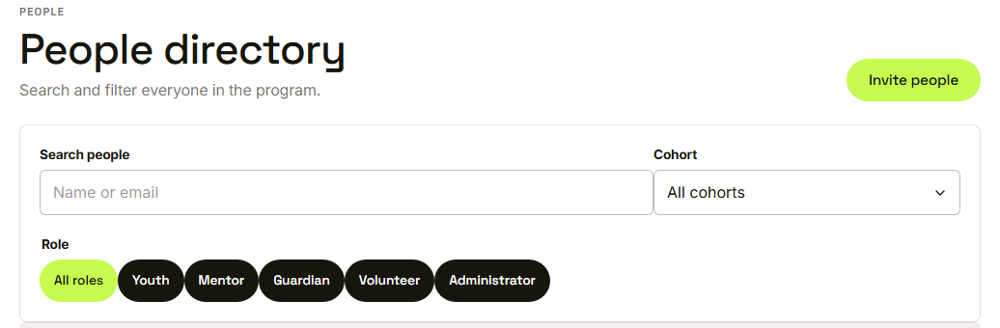
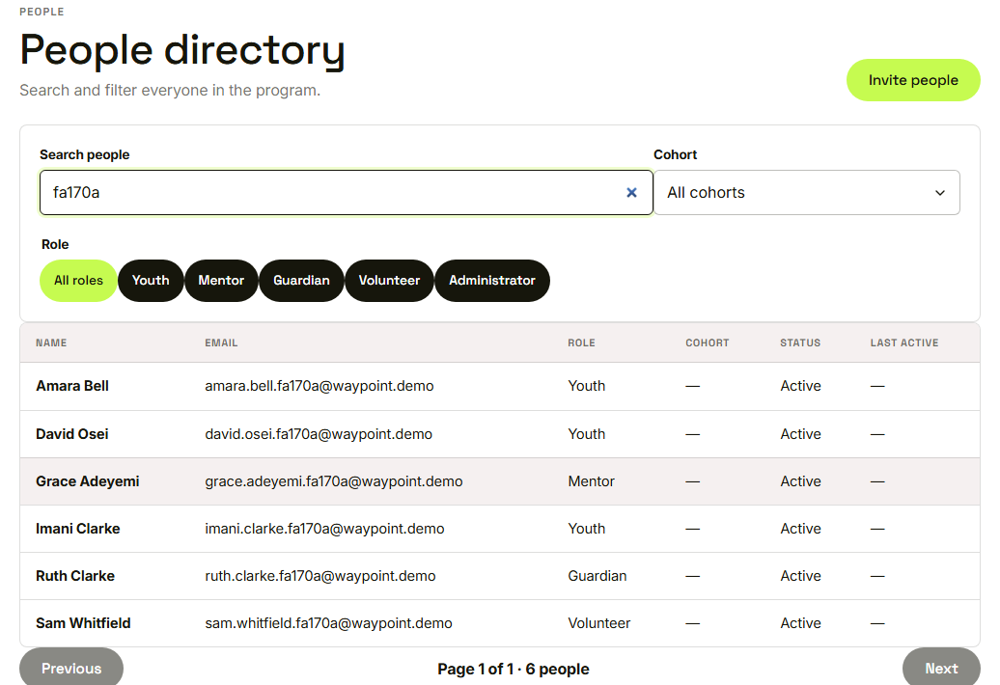
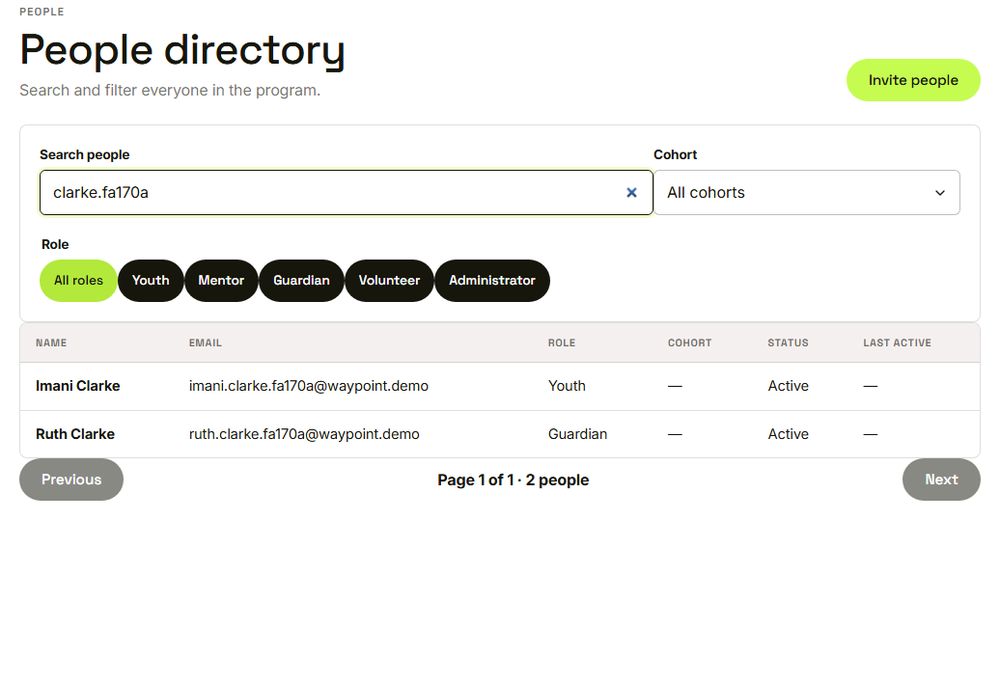
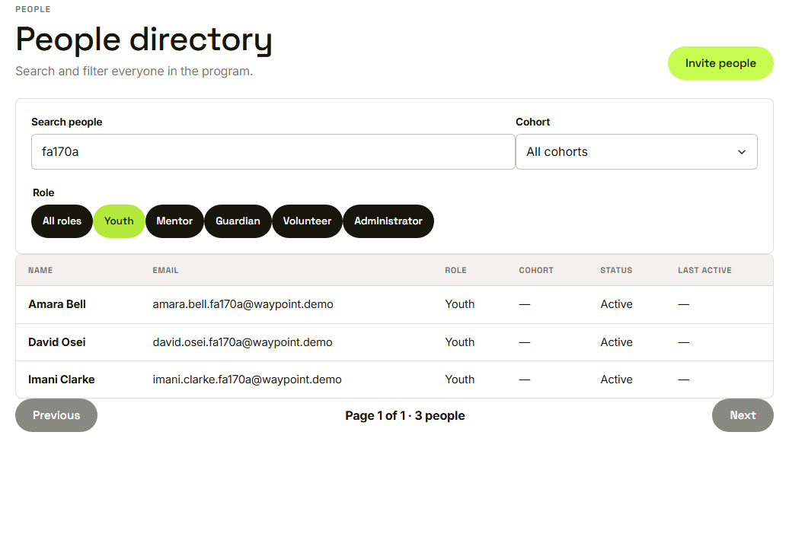
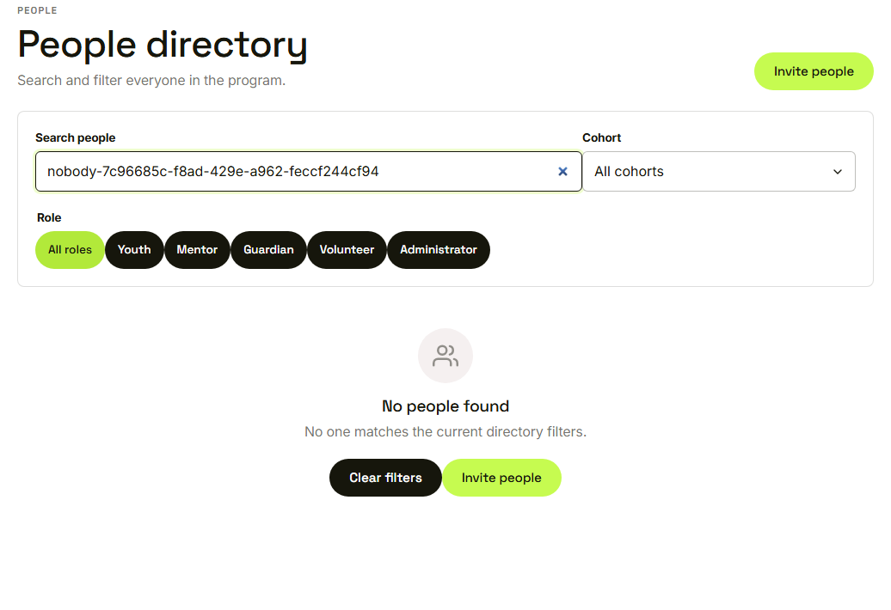

Waypoint · Video 029
Finding people
Search, filter, and the empty state
The people directory

Search, cohort, and role buttons
Search by name or email

Six people match
Narrow with a surname

Two rows left
Filter by role

Three youth
No people found

Clear filters, or Invite people
Things to remember
Search by name or email
Filter by role and by cohort
Results are paged
An empty result offers Clear filters and Invite people